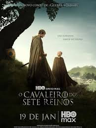

A adaptação para sériado

"O Cavaleiro dos Sete Reinos" é uma série de fantasia da HBO, baseada nos contos de George R. R. Martin, com estreia em janeiro de 2026
Resumo
Ambientada cerca de 100 anos antes de "Game of Thrones", acompanha as aventuras de Sor Duncan, o Alto (Peter Claffey), e seu escudeiro Egg (Finn Bennett) em um período com a casa Targaryen no poder.